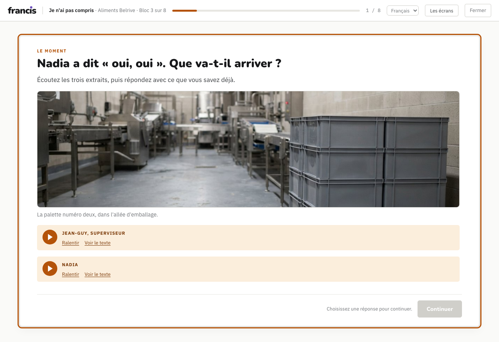
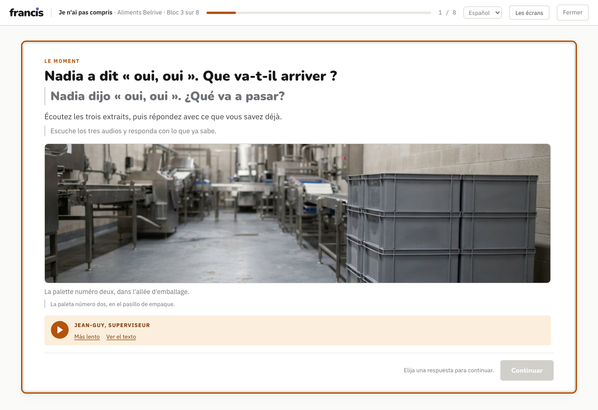

Chantier — formation en entreprise · livré
Ce n'est plus un plan : c'est une heure de cours qui se joue de bout en bout. Huit écrans, treize extraits sonores enregistrés pour l'occasion, une bascule français · español · English, trois images de l'usine et une fiche de poche imprimable. C'est la pièce qu'on laisse sur le bureau de l'employeur.
Le sélecteur de langue est en haut à droite, dans la barre. Il change les consignes, les explications et les boutons ; il ne touche jamais aux phrases françaises ni aux extraits sonores.
Jean-Guy, le superviseur, demande trois choses en huit secondes et repart. Nadia répond « oui, oui ». Vingt minutes plus tard, la palette est encore pleine et les étiquettes ne sont pas les bonnes.
Puis on rejoue la même scène. Rien n'a changé chez Jean-Guy : il parle aussi vite. C'est Nadia qui fait quatre choses — arrêter, faire ralentir, faire montrer, redire — et il finit par dire « c'est ça, parfait ». Le cinquième geste, le plus difficile, arrive à l'écran 7 : dire qu'on n'aura pas le temps.
Ce bloc n'apprend pas des mots. Il donne la permission de les dire.
C'est la phrase de l'écran 8, et c'est l'argument devant un employeur : les cinq phrases de la fiche, ses gens les connaissent déjà presque toutes.


Le débit fait la leçon à lui seul : Jean-Guy est enregistré au débit normal, Nadia et Marie-Ève d'un palier plus lent. On n'a pas eu à écrire que le superviseur parle trop vite.
| Pièce | Où | Note |
|---|---|---|
| Le contenu | build/contenu/entreprise-belrive/storyline.js |
huit écrans, chacun portant son objet es et son objet en |
| Le moteur | build/gabarit/storyline.html |
celui des points express, augmenté de la langue d'appui |
| Les extraits | build/audio_belrive.py |
13 clips Azure, trois voix, le contraste de débit écrit dans le script |
| Les images | build/images_belrive.py |
3 images en 3:2, route la moins chère d'abord ; ~0,10 $ au total |
| La fiche | build/fiche_belrive.py |
page + PDF lettre, noir et blanc, police du dépôt incorporée |
Rien n'est écrit à la main dans le produit—
python3 build/storyline.py belrive-bloc3 reconstruit la page, et le HTML ne se touche
jamais. C'est la règle du dépôt, et une refonte y a déjà été perdue.
Le sélecteur, la table des phrases d'interface et la fusion vivent maintenant dans le gabarit
commun. Un parcours qui ne déclare aucune langue — APPUI = [], ce qui est le cas
des vingt-six points express de la gamme scolaire — ne construit pas le sélecteur et
ne change en rien. Vérifié : les vingt-six ont été reconstruits, leur jeton est vide.
Conséquence : la bascule est disponible pour toute la gamme le jour où on la veut. Ajouter une langue reste un fichier et une relecture.
Chacune montre ce que dit son écran, jamais « le thème du module » : la palette de l'écran 1, la chemise jaune de l'écran 3 (« celles-là, dans la chemise jaune »), la fiche dans la poche du sarrau à l'écran 8. C'est le défaut le plus fréquent des images du dépôt, et le seul qui ne se voie pas sans mettre l'image et la phrase côte à côte.
Dans une usine, tout porte une inscription. On ne l'interdit pas — on cadre.
Affiches de sécurité, étiquettes de lot, caisses moulées à la marque du fabricant : un modèle d'image écrit le mot quand même, en charabia. Les prompts décrivent donc ce qu'on veut — murs de béton nus, caisses lisses vues de côté, chemise fermée, papier plié côté blanc — plutôt que ce qu'on ne veut pas. Les trois sont sorties justes du premier coup.
Une quatrième leçon, vue à l'écran et non en relisant : la première version poussait le premier extrait sous la ligne de flottaison. L'image plante le décor, elle ne s'étudie pas — elle est donc bornée à 300 px de haut, pour ne jamais chasser de l'écran ce qui, lui, s'étudie.
Ma recommandation tient : un seul bloc joué vaut mieux que trois esquissés. Les autres s'écrivent quand un employeur aura dit oui — et ils s'écriront avec ses mots à lui, ce qui est tout l'objet de la demi-journée d'analyse.
Les deux questions du programme sont toujours ouvertes. Je poursuis sur « employeur directement », et je n'avance aucun chiffre.
Chantier « formation en entreprise » — bloc de démonstration livré le 31 août 2026.
À lire avec : Huit heures chez Belrive, Le diagnostic didactique, Quatre situations de travail